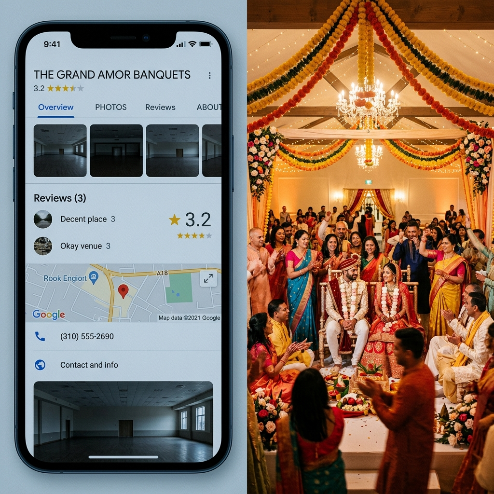

No likes, no impressions, no chart screenshots. Just real Mumbai banquet halls and what changed over twelve months of consistent work on their Google, Instagram and reviews.
Ghatkopar West, Mumbai · twelve months with us
Grand Celebration is an 800-plate banquet in Ghatkopar West, well-known in the area for thirty years for proper, traditional functions. But online, the banquet had gone quiet. Their Google page hadn't been touched since 2022 — just six blurry phone photos. Their Instagram hadn't seen a post in eight months.
Families searching for the banquet would land on the page, assume it had shut down or wasn't taking bookings, and call the smaller banquet next door instead — only because the smaller banquet had fresh photos from last weekend's function.
Our team started attending their Saturday and Sunday functions. Over three months we captured the mandap setups, the copper buffet, the entrance lighting, the seated guests. 240+ real photos went up on Google and Instagram, sized and tagged for local search.
We set up a simple follow-up with their front desk — every family that hosts a function gets a WhatsApp message a day later asking for an honest review. In twelve months, Google reviews went from 12 to 214. Map views doubled. Direction requests rose 140%.
Monthly enquiry calls went from around 4 to around 14. The banquet is booked six months in advance for the next wedding season, and they're holding a 20% higher plate rate — because families arrive already convinced this is a serious, well-run place.

Went from being quiet for 8 months to weekly post and reel highlights of real functions.
60% of bookings now originate from Google Search rather than printed pamphlets.
“Families started saying they already felt confident from what they saw online. In 30 years of running this banquet, that was new for us.”
Rajesh Mehta · Operations Director
A busy wedding banquet in Thane that wasn't showing up when families nearby searched. We tightened up their Google page, started getting reviews after each function, and posted real photos from their weekly events.
Plenty of enquiries were coming in, but very few turned into site visits. We helped them respond on WhatsApp within minutes, swapped their old printed rate sheets for a clean mobile PDF, and trained their manager on a few simple scripts.
Provide your venue name and locality. We analyse your Google Maps profile, visual freshness, and reviews to show you what families experience when they search you online.